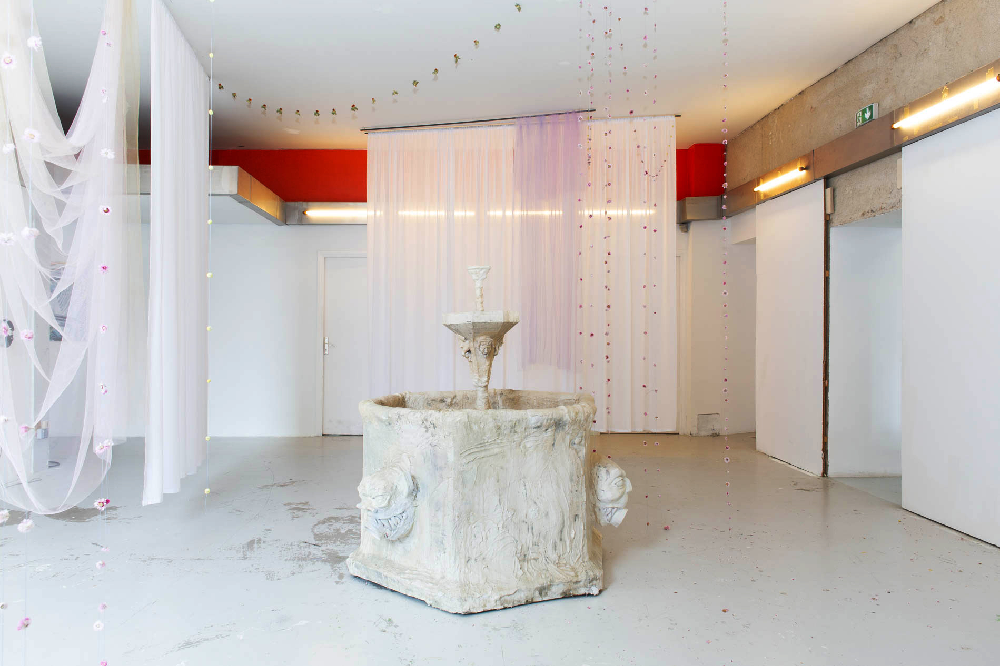
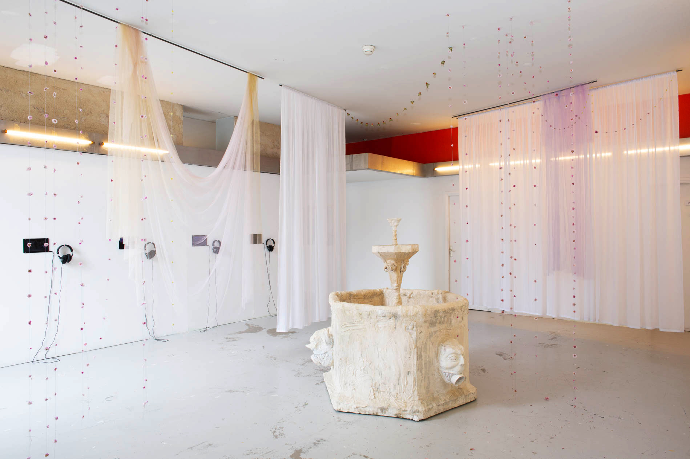

DELPHINE C. BERTRAND
visual artist
indoor landscape gardener
TEXT BY ELENA CARDIN
CURRICULUM VITAE
Pluie Violette (Purple Rain)
Dried flowers on thread silk, suspended cotton veils and tulle, text to listen with headphones, broadcast on an mp3 player
Installation realised for exhibition Voilà l’été, Expérience Generator 2014-2020, currating by Judith Quentel, director of EESAB, Quimper,
Anne Langlois and Patrice Goasduff, directors of 40mcube art center, Rennes
Quartier Général, Quimper,
June 2022
Photographs : Margot Montigny


On the picture : Stanislas Paruzel, Fontain, (sculpture) 2022 & Harilay Rabenjamina, is this my bio?, (videos on tablets) 2021